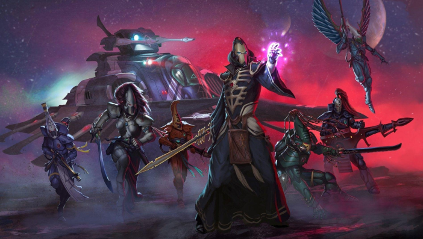
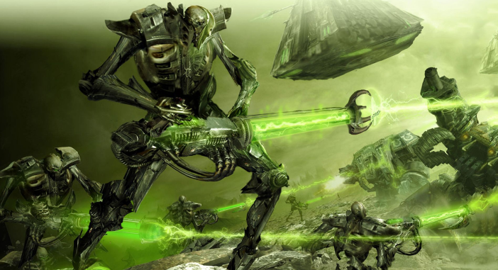
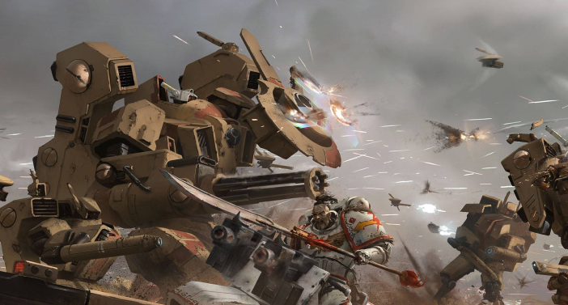
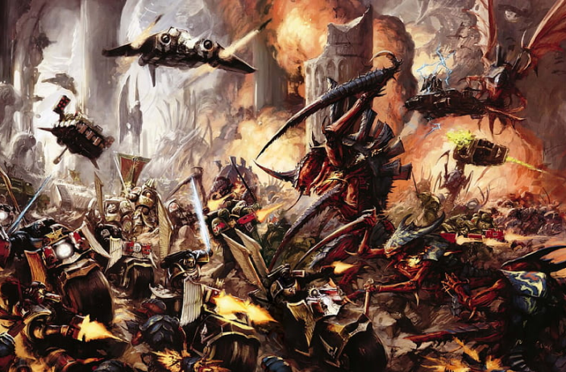
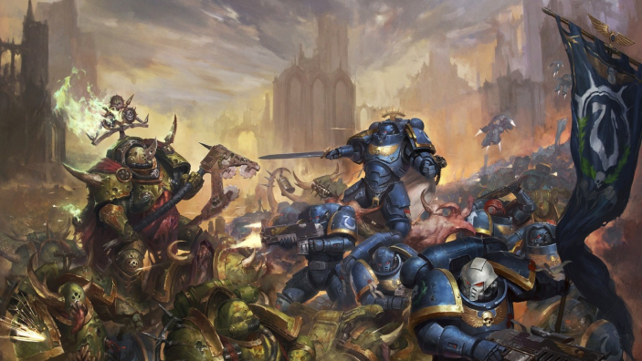

CONTACT
À PROPOS

LES RACES

Les eldars de mondes artisanaux
Les taus





L’imperium
Les eldars noirs

Les necrons
Le chao unifié
Les peaux vertes
Les tyranides

Warhammer 40,000 (Warhammer 40K) est un univers dystopique de science-fiction gothique. Situé dans le 41e millénaire, l'humanité fait face à la décadence, à la xénophobie, à la corruption et aux menaces constantes. L'Imperium, un empire totalitaire, lutte pour survivre contre des hérétiques, des extraterrestres hostiles et des forces chaotiques du Warp. Les Space Marines, des guerriers génétiquement modifiés, sont les champions de l'humanité, mais l'univers est sombre, désespéré, et la survie est constamment en jeu.
Une image de la galaxie de warhammer 40k